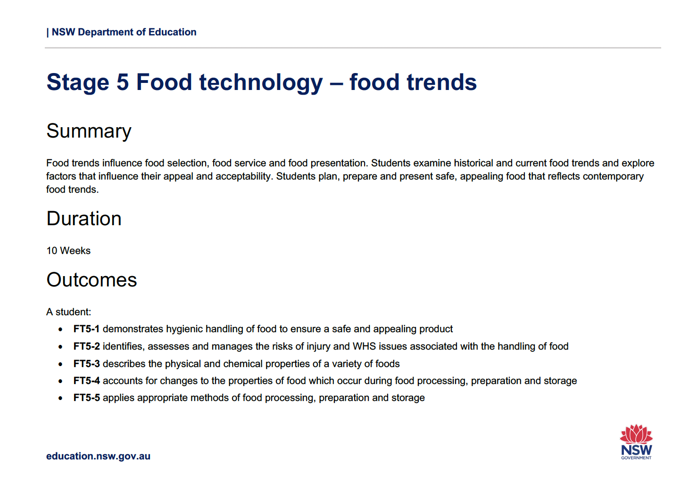
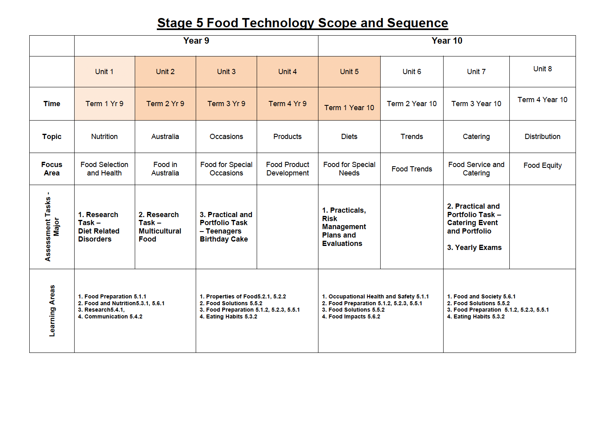
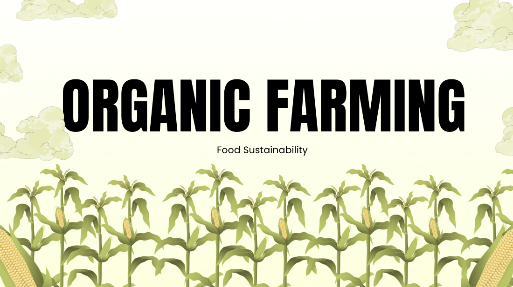
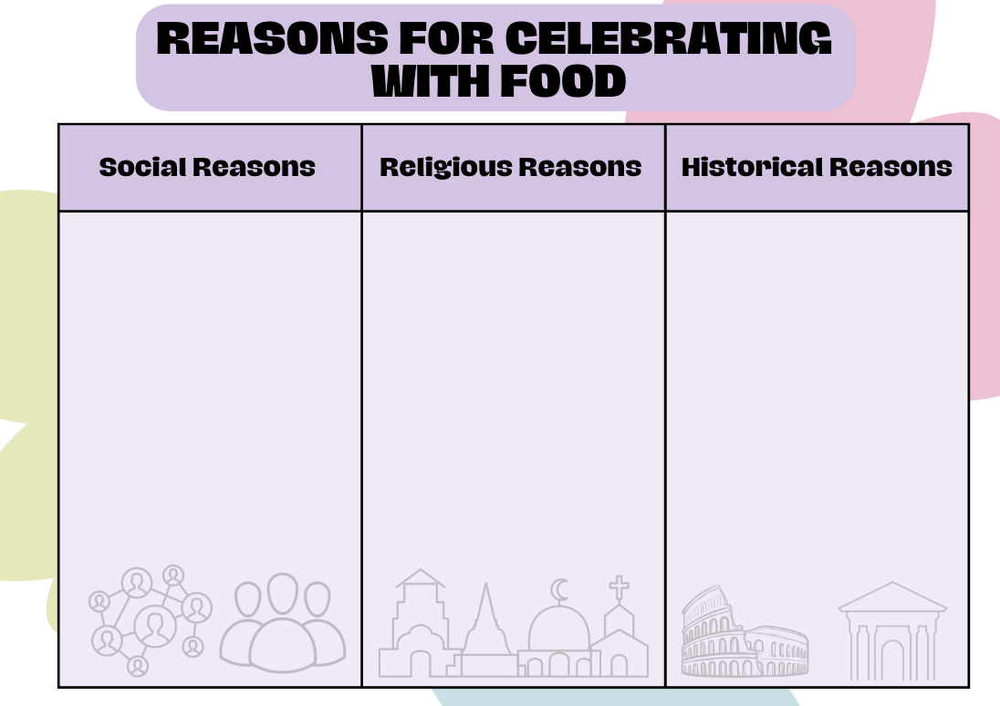
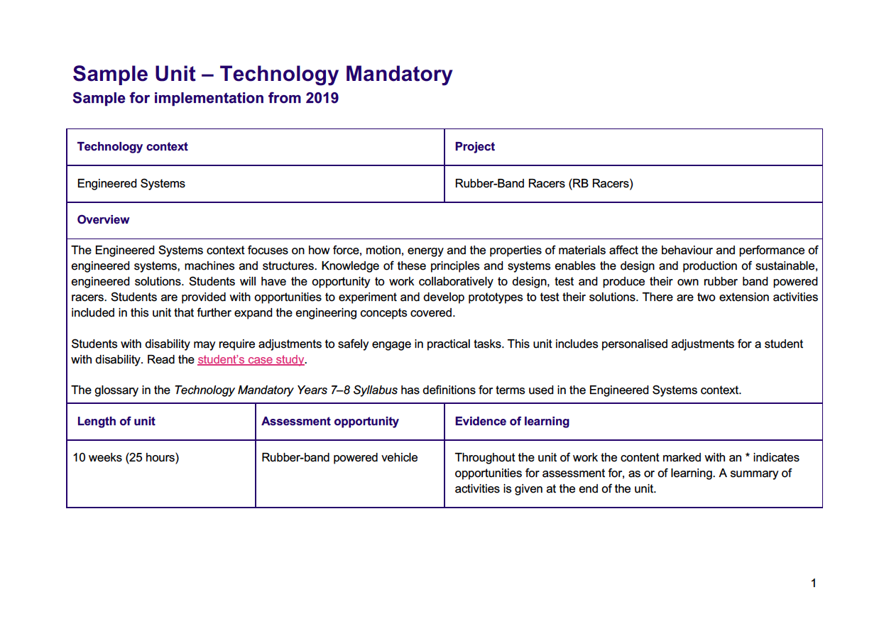
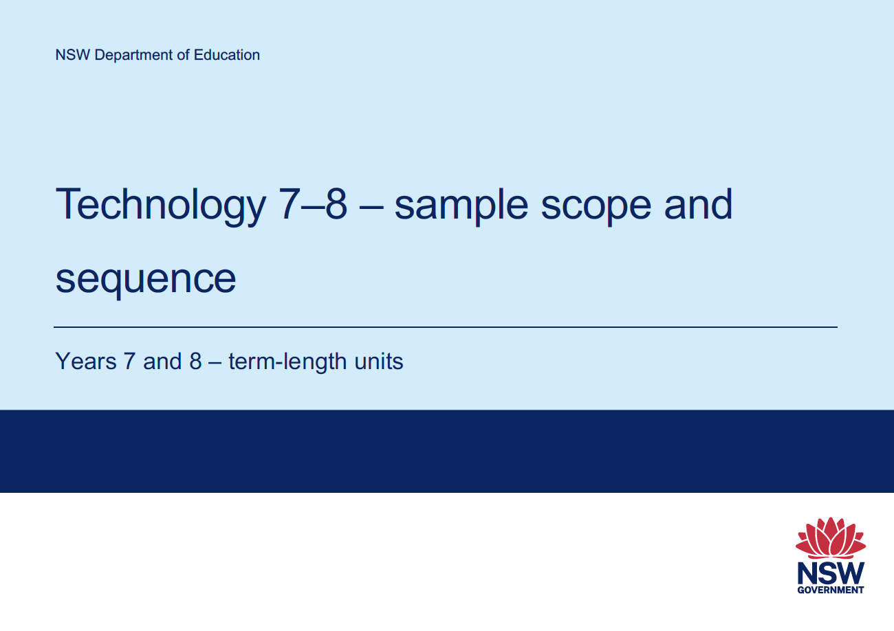

Stage 5 Food Technology - Sample Unit of Work from NESA
Scope & sequence, outcomes, resources and assesment overview.
Overview for reference: a sample unit of work (NESA), a sample scope & Sequence (NESA), an original slideshow and an orginal handout.
The following resources are provided so that you can download and adapt for your work.

Scope & sequence, outcomes, resources and assesment overview.

Organised by term, Linked to topics and Outcomes.

Slides: What is Organic farming + 3 activities.

Mix and Match activity.

Scope & sequence, outcomes, resources and assesment overview.

Enter a mark from 0 to 100 to see your grade.